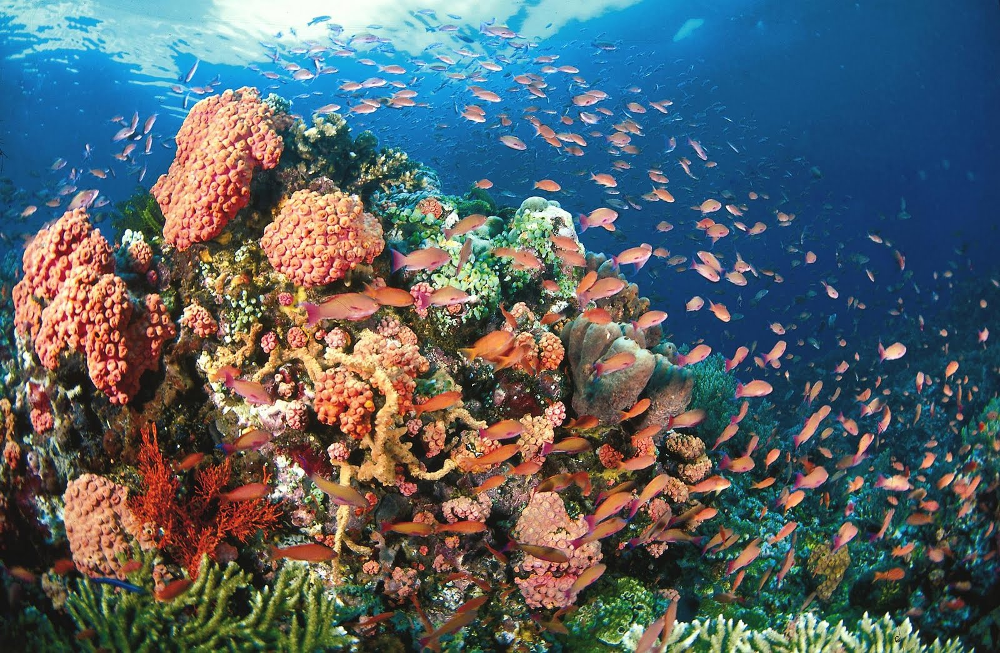
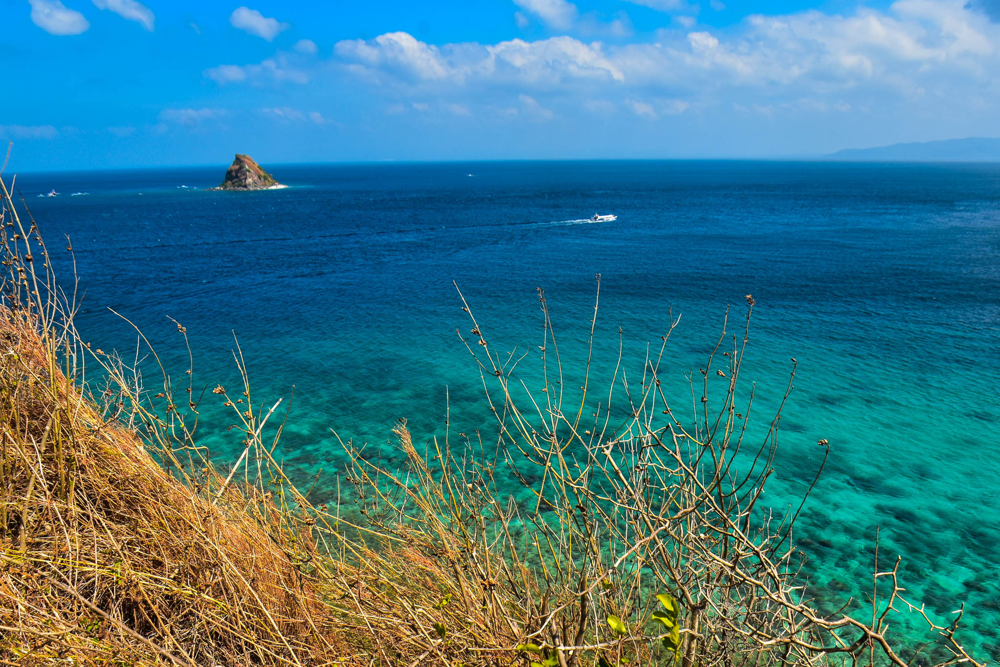
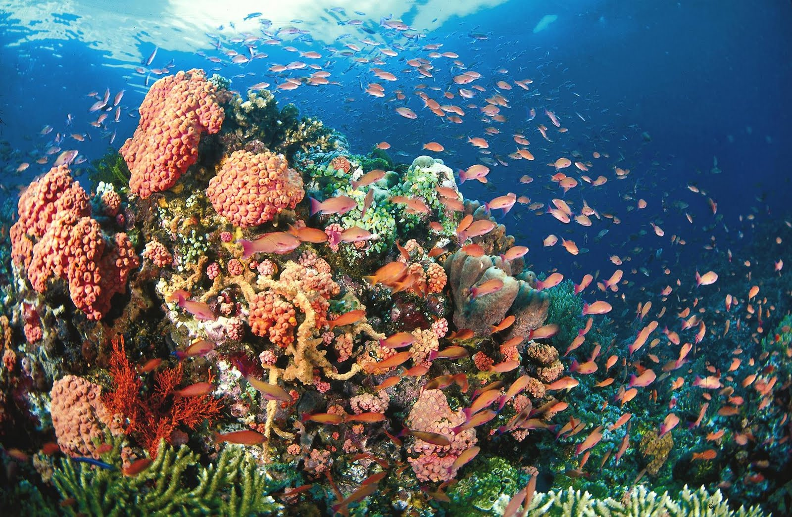
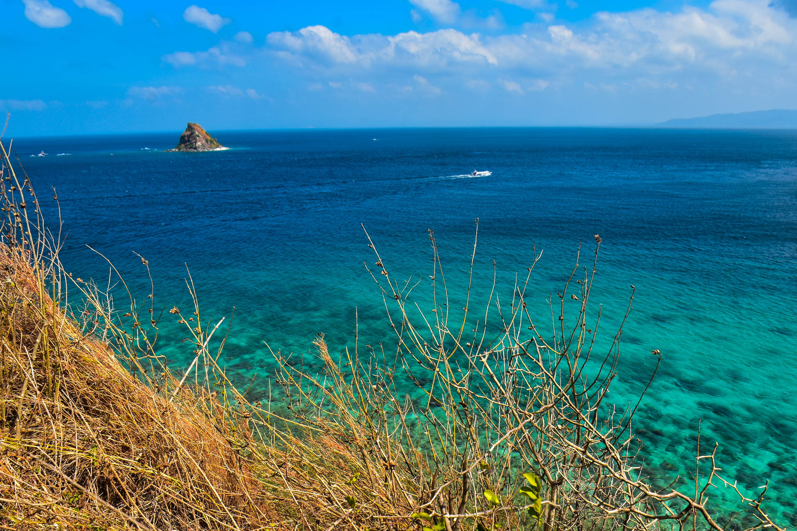

Discover Mabini’s Paradise
 




Top Attractions
Cathedral
The Cathedral Rock is one of the most popular diving spots in Mabini, Batangas. Beneath the surface, two large rocks form a structure that looks like church pillars, with a cross placed between them years ago. The site is home to vibrant corals and a variety of fish, attracting both beginner and experienced divers.
Camp Netanya Resort & Spa
Camp Netanya Resort & Spa in Ligaya, Mabini, Batangas is often called the “Little Santorini of the Philippines” because of its white-and-blue Greek-inspired architecture overlooking the sea. It’s a favorite spot for travelers who want a mix of relaxation and adventure, offering stunning ocean views, an infinity pool, and easy access to nearby dive sites.
Mt. Gulugod Baboy
Mt. Gulugod Baboy in Mabini, Batangas is a beginner-friendly hiking destination known for its rolling hills and breathtaking 360-degree views. From the summit, visitors can see Batangas Bay, Balayan Bay, and even nearby islands on a clear day. It is a popular spot for day hikes, camping, and catching the sunrise or sunset above the sea.